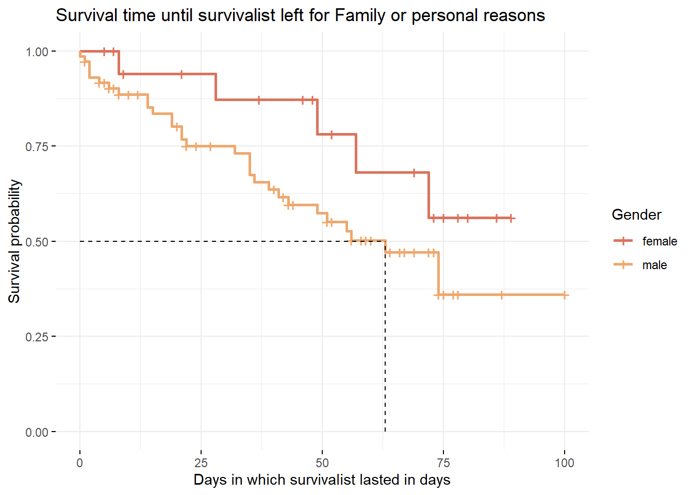
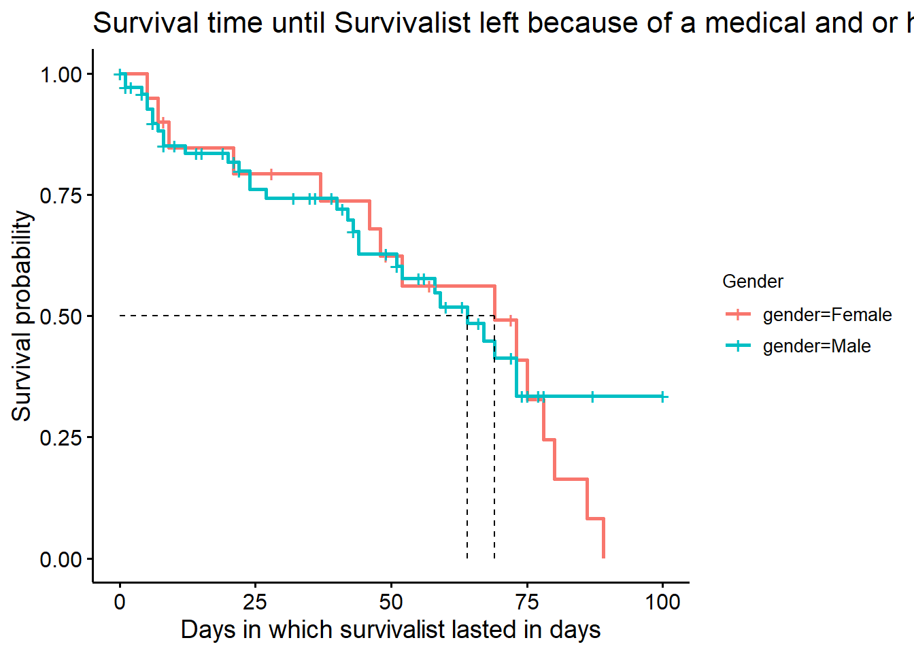

Code
tb <- table(alone$gender,alone$season)
names(dimnames(tb))<- c("Gender", "Seasons")
tb Seasons
Gender 1 2 3 4 5 6 7 8 9
Female 0 3 3 1 3 3 2 3 2
Male 10 7 7 13 7 7 8 7 8Tidy tuesday is a weekly social data project in the R programming language community, created by R for Data Science authors Hadley Wickham and Mara Averick. The project involves posting a new dataset on the Tidy Tuesday gitHub repository every Tuesday, along with a set of questions or challenges related to the data. The aim of Tidy Tuesday is to provide a fun and collaborative way for R users to improve their data analysis and visualization skills, and to share their work with the broader community.
The Tidy Tuesday I decided to investigate is the Alone data set. This dataset contains information about the participants and their progress in the Alone TV series. The data set includes 8 seasons of the show, with each season consisting of a different set of participants who are dropped off in a remote wilderness location and must survive alone. The data set includes information such as the participant’s name, age, gender, occupation, location, survival equipment, and duration of their stay. The project provided a valuable opportunity for me to practice their data wrangling, visualization, and analysis skills using real-world data in a fun and engaging way.
I used a linear regression model to determine whether factors such as age, gender, and location affected how long a person endured. As it turned out, these factors had no bearing on the beginning stages of investigation. I therefore made the decision to focus on evaluating the probability of various professions and sexes by using survival analysis.
tb <- table(alone$gender,alone$season)
names(dimnames(tb))<- c("Gender", "Seasons")
tb Seasons
Gender 1 2 3 4 5 6 7 8 9
Female 0 3 3 1 3 3 2 3 2
Male 10 7 7 13 7 7 8 7 8When I looked at the quantifiable part of the data set, I first noticed there were roughly three times as many men as there were women.
I was still able to use the data using bar graphs and survival analysis despite the gender disparity.
plot1<-alone%>%
mutate(season = as.factor(season))%>%
ggplot(aes(season, days_lasted, fill = gender))+
facet_wrap(~gender, scales = "free_x")+
geom_bar(stat = "identity", position = "dodge",alpha = 0.35)
plot2<-alone%>%
mutate(result = as.factor(result))%>%
ggplot(aes(result, days_lasted, fill = gender))+
facet_wrap(~gender, scales = "free_x")+
geom_bar(stat = "identity", position = "dodge",alpha = 0.35)
grid.arrange(plot1,plot2)
In my continued exploration, I wanted to investigate the survival rates between men and women using a Kaplan-Meier Curve. I focused on three categories: medically evacuated, departed for medical health, and left for personal or family reasons. As I delved into the data, I discovered a significant difference in survival rates specifically related to leaving for personal or family reasons among men. It became evident that men in these situations had a lower chance of survival compared to women. This finding suggests that leaving for personal or family reasons might have different impacts on survival for men and women. To gain a deeper understanding of why this difference exists, further research is needed.
alone3 = alone%>%
mutate(status = ifelse(reason_category == "Family / personal",1,0))
al3 = alone3 %>%
mutate(left=days_lasted,right=ifelse(status==1,days_lasted,NA))
survObject3=Surv(al3$left,al3$right,type="interval2")
km3=survfit(survObject3~al3$gender) # over all, give table.
#summary(km3)
mod3<-ggsurvplot(fit=km3, data=al3,risk.table = F,conf.int=F,surv.median.line = "hv",
legend="right",legend.title = "Gender",legend.labs = c("female","male"),ggtheme = theme_minimal())+ labs(
title="Survival time until survivalist left for Family or personal reasons",
x="Days in which survivalist lasted in days"
)
mod3
Finally, I made the decision to group the participants by occupation. I divided the occupations into white-collar, outdoor survivalists, blue-collar tradesmen, members of the armed services, and others, which mostly include entrepreneurs. I took care to use my research and extensive knowledge of the world to the best of my ability because I am aware that this causes some prejudice.
alonedf<-alone2%>%
mutate(left=days_lasted,right=ifelse(status==1,days_lasted,NA))%>%
mutate(profcat =
case_when(alone2$profession %in% c( "Corrections Officer",
"US Army Guard and Former US Coast Guard",
"Writer and Former Missionary",
"Former US Sniper",
"Law Enforcement and Former Air Force",
"Former Wildland Firefighter",
"Former US Army",
"Retired Green Beret",
"SERE Specialist",
"Search and Rescue K9 Handler",
"Sniper & Survival Skills Instructor",
"Retired Military/Homesteader",
"Prescribed Fire Practitioner","Law Enforcement") ~ "armforces",
alone2$profession %in% c( "Research Assistant",
"Author",
"Survivalist and Wildlife Therapist/Natural Healing",
"Anthropologist",
"Biologist & Forrester",
"Herbalist",
"Accountant",
"High School Teacher",
"Environmental Scientist",
"Psychotherapist",
"Industrial Project Manager",
"Accountant",
"Biologist",
"Educational Consultant",
"Physician",
"Community Leadership")~ "whitecollar",
alone2$profession %in% c("Butcher",
"Carpenter",
"Electrician",
"Boat builder",
"Drywaller",
"Retired Shipping Driver",
"Outdoor Educator",
"Builder",
"Fisherman",
"Construction Foreman",
"Equipment Operator",
"Blacksmith",
"Construction",
"Traditional Bowyer",
"Tool Maker",
"Prehistoric Leather Specialist",
"Professional Bowyer & Hunter",
"Hunting Guide",
"Oil Rig Roughneck",
"Alpaca Shearer, Treehouse builder",
"Commercial Fisherman",
"Hunting and Packgoat Guide")~"bluetrades",
alone2$profession %in% c("Survivalist and Wildlife Therapist/Natural Healing",
"Aboriginal Skills Instructor",
"Survival Instructor",
"Homesteader & Carpenter",
"Bushcraft Instructor",
"Trapper",
"Wilderness Skills Instructor",
"Bushcraft Instructor",
"Outdoor Educator",
"Wilderness Living Skills Instructor",
"Ancestral Skills Teacher ",
"Wilderness Guide",
"Homesteader",
"Primitive Technology Instructor",
"Ancestral Living Skills Instructor",
"Winter Wilderness Expedition Operator",
"Primitive Skills Instructor",
"Primitive Skills School Owner",
"Homesteader",
"Wilderness Survival Instructor",
"Outdoor Professional",
"Wilderness/Primitive Skills Instructor",
"Wilderness Survival Instructor",
"Wilderness Expedition Guide"
)~"survoutdoor", TRUE ~"other"))
table(alonedf$profcat)
armforces bluetrades other survoutdoor whitecollar
13 30 12 23 16 ggplot(alonedf, aes(x = days_lasted,y=profcat))+
facet_wrap(~gender, scales = "free_x")+
geom_bar(stat = "identity", position = "dodge",alpha = 0.35)+
labs(y = "Profession")km4 = survfit(survObject3~alonedf$profcat)
mod4 <- ggsurvplot(fit=km4, data=alonedf,risk.table = F,conf.int=F,surv.median.line = "hv",
legend="right",legend.title = "Profession",legend.labs = c("Arm Forces","Blue/Trades","Other","Surv/Outdoor","White Collar"),ggtheme = theme_minimal())+ labs(
title="Survival time until survivalist left",
subtitle = "categorized by their professions",
x="Days in which survivalist lasted in days"
)
mod4
Women are more likely than men to survive longer due to variables such as missing family or other personal factors.
Careers in the blue collar, trades, or survivalist sectors lasted longer than those in the white collar, former army, or armed forces sectors.
There may be more discussion of the factors that make military careers less likely to last for an extended period on their own.
The probability of survival of participants lasting alone is quite impressive.
After diving into the Alone Tidy Tuesday data set, I conducted an analysis to examine the survival rate of men and women participants. I specifically looked at the reasons behind contestants being medically evacuated or leaving for medical health or personal family reasons, and investigated if there were any significant differences in survival rates between genders. Interestingly, I found that there was a 50% higher chance for female participants to outlast males (approximately 60 days longer) due to family or personal reasons. This finding sparked my curiosity and I believe it opens up potential discussions. I encourage you to share your thoughts below so that we can delve into more detailed analysis.
Additionally, I decided to explore the professions of the participants and investigate if there were any notable disparities in survival rates among different occupational categories. I classified the professions into white-collar workers, outdoor survivalists, blue-collar tradesmen, armed forces, and others, predominantly entrepreneurs. The analysis revealed that outdoor survivalists and blue-collar tradesmen had a higher likelihood of surviving longer compared to armed forces and white-collar workers. This finding was fascinating as it validated certain assumptions about survival skills, and I was thrilled to have data-backed evidence supporting these assumptions.
Throughout this data exploration, I was mindful of potential biases that could arise from categorizing the professions. I made a conscious effort to ensure ethical considerations by placing unknowns into the “Other” category to prevent unintentional biases. Overall, this project provided an excellent opportunity for me to apply my skills in data wrangling, visualization, and analysis. I gained valuable insights from this experience and expanded my knowledge in the process.